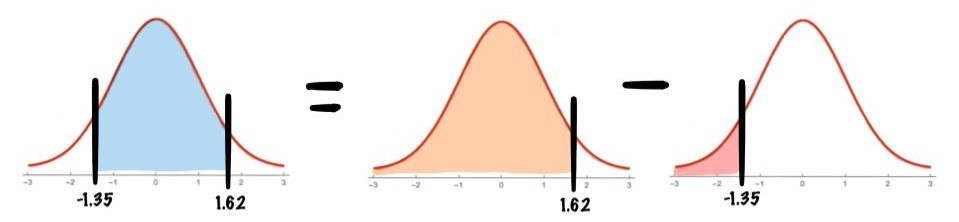

Find the area under the standard normal distribution curve between \(z=1.62\) and \(z=-1.35\).

As we see in the picture to calculate this we can simply calculate
\[P(-1.35<z<1.62)=P(z<1.62)-P(z<-1.35)\]
Again we use our table and see that
\[P(z<1.62)=0.9474\]
and
\[P(z<-1.35)=0.0885\]
Thus we calculate our answer:
\[P(-1.35<z<1.62)=P(z<1.62)-P(z<-1.35)=0.9474-0.0885=0.8589\]